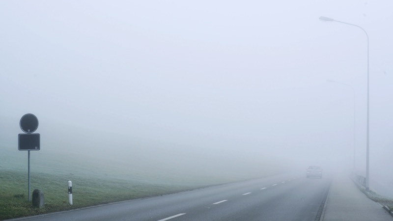
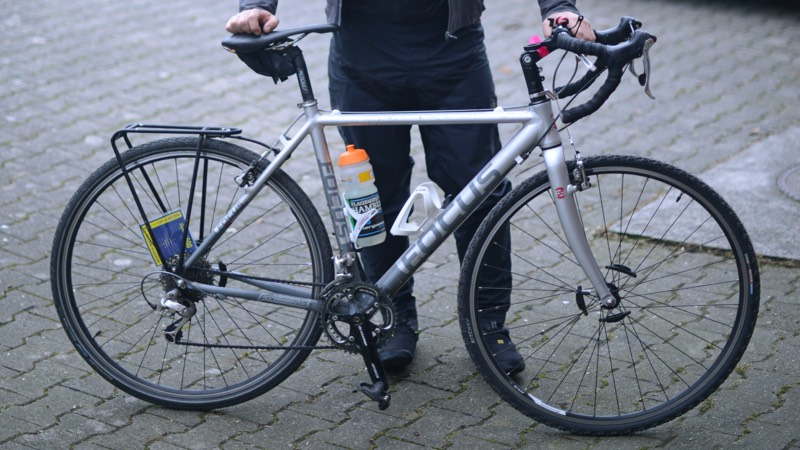

31 de diciembre
Lindau
St. Gallen
Aunque por mas que quieras luchar contra la corriente del rio, es mejor de que te dejes llevar por la fuerza de este.
Basel amanece con -2 grados. Las temperaturas no descienden como lo pensado, lo que me da un respiro en pensar de que si ayer logré aguantar, pues hoy tambien.
Me despedí de Basel a las 9:00 y programé mi ruta para pasar por la frontera de Suiza con Alemania (Koblenz) para seguir posteriormente por Schaffausen y luego irme en dirección hacia Konstanz y pasar por el norte del lago Bodensee hasta mi meta final con la ciudad de Lindau.
En general las dos primeras horas del camino no tiene grandes atractivos especiales, ya que se va casi siempre por carreteras rurales con la compañía constante del gran tráfico de autos que existe en la región. Posteriormente el camino se pone más interesante, pasando por el lado del Rhin y por caminos secundarios pero muy bien asfaltados.
Poco antes de las 14:00 Horas en Tiengen sucede lo inesperado. Mi rueda trasera pierde aire, teniendo que repararla lo más rápido posible para aprovechar generosamente el la luz del día, que a medida que llegaba la tarde, desaparecían la nubes y lo gris del cielo.
El puente que cruza el Rhin sirve también de frontera entre Alemania y Francia, por la cual la ruta seguía hasta Eschau para tomar posteriormente la una larga ciclovía a un costado de un canal de muchos kilómetros (canal du Rôhne au Rhin), pasando constantemente por diques, avenidas de árboles solitarias y por sobretodo por barcos estacionados acondicionados como casas, recordándome un poco a Holanda y la relación que tienen los habitantes con los ríos y canales.
En mi nuevo intento por arreglar por tercera vez la rueda llegué a la conclusión de que el pegamento utilizado ya no hacía efecto, no quedando otra opción que tomar un tren desde Gottmadingen hasta Lindau.
Para mi terminaba así el día con un poco de frustración y ganas de más, al darme por vencido y decidir llegar el día de hoy hasta aquí. Mi plan para los siguientes dos días tendrán que ser adasptados para completar así los 500 kilómetros.
